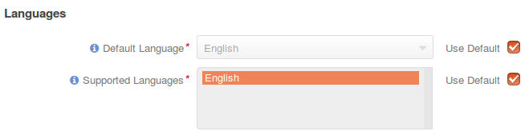
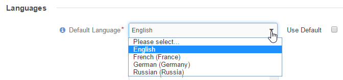
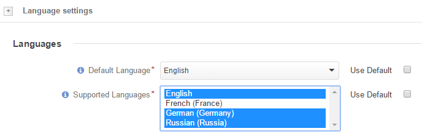

Language Settings¶
To define the default system language and additional supported languages:
Navigate to the language settings:
Click System > Configuration in the main menu.
In the System Configuration menu to the left, expand General Setup and click Language settings.
The following page opens:

Select the default language for the OroCommerce store frontend and management console.
Select the supported languages that can be used for translation of the OroCommerce content. Use the Ctrl and Shift keys to choose the languages from the list.

Settings are saved automatically.
Note
See languages section for available languages mangement and translation synchronization status.